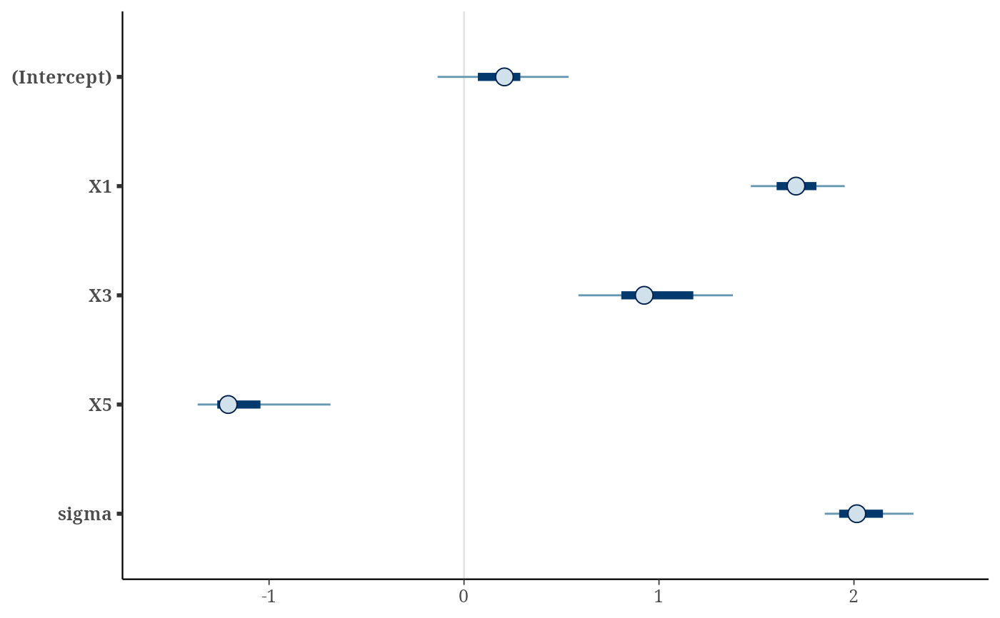

This is the as.matrix() method for projection objects (returned by
project(), possibly as elements of a list). It extracts the projected
parameter draws and returns them as a matrix. In case of different (i.e.,
nonconstant) weights for the projected draws, see
as_draws_matrix.projection() for a better solution.
# S3 method for projection
as.matrix(x, nm_scheme = NULL, allow_nonconst_wdraws_prj = FALSE, ...)An object of class projection (returned by project(), possibly
as elements of a list).
The naming scheme for the columns of the output matrix.
Either NULL, "rstanarm", or "brms", where NULL chooses "rstanarm"
or "brms" based on the class of the reference model fit (and uses
"rstanarm" if the reference model fit is of an unknown class).
A single logical value indicating whether to
allow projected draws with different (i.e., nonconstant) weights (TRUE)
or not (FALSE). CAUTION: Expert use only because if set to TRUE,
the weights of the projected draws are stored in an attribute wdraws_prj
and handling this attribute requires special care (e.g., when subsetting
the returned matrix).
Currently ignored.
An \(S_{\mathrm{prj}} \times Q\) matrix of projected
draws, with \(S_{\mathrm{prj}}\) denoting the number of projected
draws and \(Q\) the number of parameters. If allow_nonconst_wdraws_prj
is set to TRUE, the weights of the projected draws are stored in an
attribute wdraws_prj. (If allow_nonconst_wdraws_prj is FALSE,
projected draws with nonconstant weights cause an error.)
In case of the augmented-data projection for a multilevel submodel
of a brms::categorical() reference model, the multilevel parameters (and
therefore also their names) slightly differ from those in the brms
reference model fit (see section "Augmented-data projection" in
extend_family()'s documentation).
# Data:
dat_gauss <- data.frame(y = df_gaussian$y, df_gaussian$x)
# The `stanreg` fit which will be used as the reference model (with small
# values for `chains` and `iter`, but only for technical reasons in this
# example; this is not recommended in general):
fit <- rstanarm::stan_glm(
y ~ X1 + X2 + X3 + X4 + X5, family = gaussian(), data = dat_gauss,
QR = TRUE, chains = 2, iter = 500, refresh = 0, seed = 9876
)
# Projection onto an arbitrary combination of predictor terms (with a small
# value for `ndraws`, but only for the sake of speed in this example; this
# is not recommended in general):
prj <- project(fit, predictor_terms = c("X1", "X3", "X5"), ndraws = 21,
seed = 9182, verbose = FALSE)
# Applying the as.matrix() generic to the output of project() dispatches to
# the projpred::as.matrix.projection() method:
prj_mat <- as.matrix(prj)
# Since the draws have all the same weight here, we can treat them like
# ordinary MCMC draws, e.g., we can summarize them using the `posterior`
# package:
if (requireNamespace("posterior", quietly = TRUE)) {
print(posterior::summarize_draws(
posterior::as_draws_matrix(prj_mat),
"median", "mad", function(x) quantile(x, probs = c(0.025, 0.975))
))
}
#> # A tibble: 5 × 5
#> variable median mad `2.5%` `97.5%`
#> <chr> <dbl> <dbl> <dbl> <dbl>
#> 1 (Intercept) 0.207 0.202 -0.269 0.594
#> 2 X1 1.70 0.155 1.40 1.97
#> 3 X3 0.924 0.266 0.560 1.45
#> 4 X5 -1.21 0.111 -1.53 -0.602
#> 5 sigma 2.01 0.183 1.83 2.35
# Or visualize them using the `bayesplot` package:
if (requireNamespace("bayesplot", quietly = TRUE)) {
print(bayesplot::mcmc_intervals(prj_mat))
}
